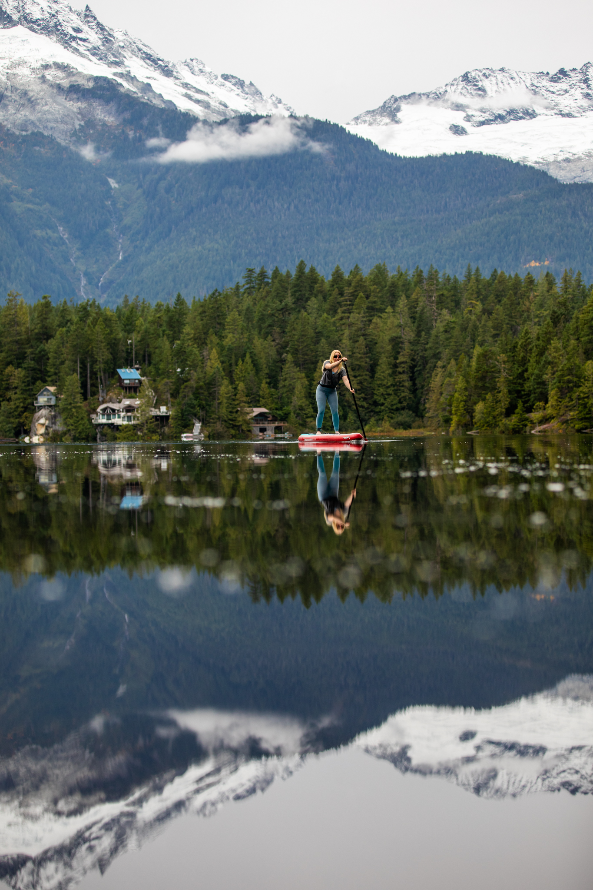
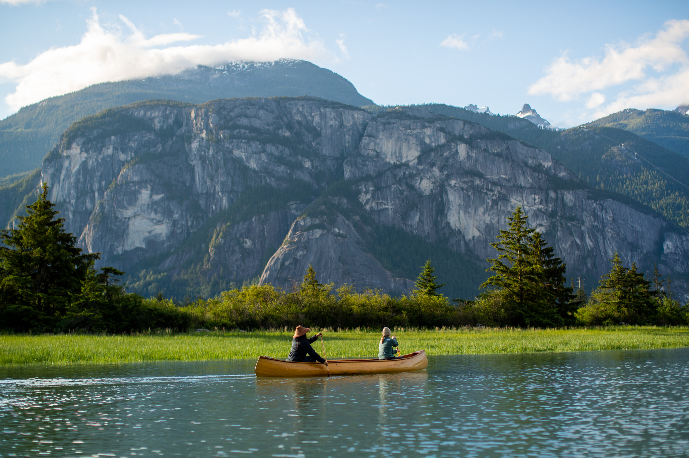

Seasonal Guide
The summer crowds are gone. The lakes are still here.
September and October in Squamish and Whistler can be some of the best paddling of the year: glassy mornings, yellow maples and cottonwoods, the first snow dusting the peaks, and launch beaches all to yourself. The catch is the water. It’s cold, and getting colder every week. Here’s how to enjoy it safely.

Cold water changes the rules
Falling into cold water is a very different event from falling in during August. Paddling safety courses teach the 1-10-1 rule:
- 1 minute of cold shock, when you gasp and breathe hard. Stay calm and keep your head above water.
- 10 minutes of useful movement before your arms and legs stop cooperating. Use it to get back on the board or to shore.
- 1 hour or so before hypothermia makes you lose consciousness. A PFD keeps you floating that whole time.
That’s why the single most important thing in fall is simple: wear your PFD, done up, the whole time. Not under the seat. On you.
Dress for the water, not the air
- Skip cotton. Wear synthetic or wool layers that stay warm when wet.
- Bring a full change of clothes in a dry bag, plus a warm hat.
- On a paddleboard, a wetsuit is worth it if you’re likely to fall in.
- Pack a thermos. A hot drink on the beach afterwards is half the fun.
Plan around shorter days
The sun drops behind the mountains early in the valleys, and the temperature drops with it. Start in the late morning once the frost is off, finish well before dusk, and tell someone where you’re going and when you’ll be back.

Best fall paddles
- Alice Lake: sheltered, with easy shoreline to stay close to.
- Brohm Lake and Browning Lake: small lakes where shore is never far.
- Squamish Estuary: mornings can be glassy; check the tide and the wind.
- Alta Lake and Lost Lake, Whistler: easy launches and autumn colour, a short walk from the Village.
In fall we’d steer most people away from big, exposed water like Green Lake, open Howe Sound or the Squamish River unless you’re experienced and dressed for immersion. Stay close to shore; if you do go in, shore is your rescue.
Respect the wildlife
Fall is a busy season for wildlife in the Sea to Sky: salmon are running in the rivers and bears are feeding hard before winter. Give rivers and creek mouths a wide berth, keep food packed away, and carry bear spray if you’re heading onto trails from the water.
Booking a fall paddle
We deliver canoes and paddleboards to lakes around Squamish and Whistler with PFDs, paddles and safety gear included. Availability changes as the season winds down, so call or text (604) 849-8898 to check dates, and we’ll help you pick the most sheltered launch for the day’s weather.